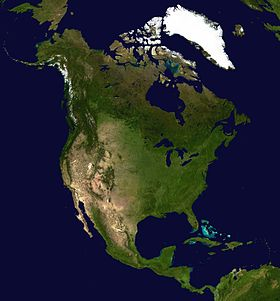

أمريكا الشمالية

خصائص جغرافية
المساحة : 24930000 كيلومتر مربع
عدد السكان
عدد السكان : 579000000
الكثافة السكانية : 23.22 نسمة/كم2
فيديو تعريفى
تعريفها
تعترف الأمم المتحدة رسميا بأمريكا الشمالية أنها تشمل ثلاث مناطق هي: شمال أمريكا، أمريكا الوسطى، والكاريبي. وحدد ذلك رسميًا شعبة الإحصاءات في الأمم المتحدة. "أمريكا الشمالية"، كمصطلح متميز عن "شمال أمريكا"، الذي يستثني أمريكا الوسطى، والتي قد تشمل المكسيك. وفي سياق اتفاقية التجارة الحرة لأمريكا الشمالية، يشمل المصطلح كندا والولايات المتحدة والمكسيك، وهي الدول الثلاث الموقعة على تلك المعاهدة.
السياحة فى أمريكا الشمالية
السياحة في أمريكا الشمالية | الرحالة | قارة تقع بالكامل في نصف الكرة الشمالي وتقع بالكامل تقريباً في نصف الكرة الغربي. وتعتبر أيضاً شبه قارة شمالية للأمريكتين. يحدها من الشمال المحيط المتجمد الشمالي، من الشرق المحيط الأطلسي، من الغرب المحيط الهادي، ومن الجنوب الشرقي أمريكا الجنوبية والبحر الكاريبي. تضم قارة أمريكا الشمالية 3 دول فقط، هي كندا، الولايات المتحدة الأمريكية، والمكسيك. وأمريكا الشمالية هي ثالث أكبر قارة من حيث المساحة، بعد آسيا وأفريقيا، والرابعة من حيث السكان بعد آسيا وأفريقيا وأوروپا. وأول من استوطن أمريكا الشمالية هم هنود باليو، الذين بدأوا في الوصول أثناء الفترة الجليدية بعبور جسر برينك البري، وضمت حضارات قديمة مختلفة مثل حضارة الأزتك وجضارة المايا.


اماكن سياحية في أمريكا الشمالية
المقالة الرئيسية فنادق أمريكا الشماليةتضم القارة عددًا من الوجهات السياحية الهامة، مثل تورنتو ومونتريال في كندا، ووواشنطن ونيويورك وفلوريدا وهوليود ولاس فيجاس في الولايات المتحدة الأمريكية، وكذلك ميكسيكو سيتي، وآثار حضارة المايا في المكسيك
يقع في جزيرة الحرية الواقعة بخليج نيويورك، وهو عبارة عن تمثال ضخم يرتكز على قاعدة يبلغ عرضها ٤٧ م، ويبلغ طوله من أسفل القاعدة ٩٣ م. وحصلت الولايات المتّحدة عليه كهديّة من فرنسا عام ١٨٨٦. وهو من أهم معالم السياحة في أمريكا الشمالية والعالم
مسلة كليوباترا الفرعونية، التي تم نقلها من مصر، وموجودة في سنترال بارك بنيويورك، وهي أكبر حدائق المدينة، اكتمل بنائهاعام ١٨٧٣ لتُصبح لاحقًا معلمًا وطنيًّا هامًا يجتذب عشرات الملايين من الزوار، وهي من أهم معالم السياحة في أمريكا الشمالية
واحدة من أفضل مناطق الجذب في كندا التي تجذب الملايين من الزوار كل عام. يقبل المسافرين الذين يرغبون في رؤية مشهد من الحدائق والمياه المتدافعة من أعلى لأسفل، وتقع في مقاطعة أونتاريو.
هي ثاني أكبر مدينة في كندا بعد العاصمة تورونتو وهي مركز كبير للثقافة لاحتوائها على عدد كبير من الأماكن الاثرية القديمة والاحياء الاثرية كما تتميز بالعديد من أماكن الترفيه والاحياء المتميزة، وهي من أهم السياحة في أمريكا الشمالية
أكبر مدن حضارة المايا في شبه جزيرة يوكاتان، وواحدة من أهم معالم السياحة في أمريكا الشمالية وتحديدا في المكسيك، ويعتبر هيكل هرم كاتسيو بتصميمه الفريد هو المعلم السياحي الأكثر شهرة بها.


|
أمريكا الشمالية |
|  |
|
|
|
خصائص جغرافية المساحة : 24930000 كيلومتر مربع |
|
عدد السكان عدد السكان : 579000000 الكثافة السكانية : 23.22 نسمة/كم2 |
|
فيديو تعريفى |